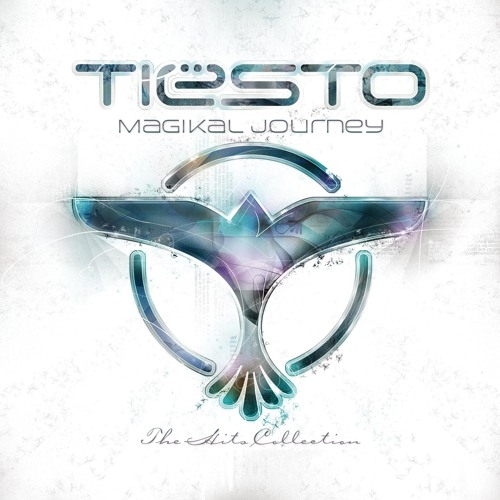
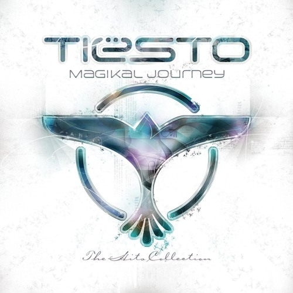

Biografía
Tijs Verwest Michiel (17 de enero de 1969) DJ. Nació en Breda, Países Bajos. Más conocido en el mundo artístico como DJ Tiësto. Su interés por la música surgió a la edad de ocho años. Más adelante, decidió dedicar más tiempo a esta y comenzó a tocar en fiestas escolares. A partir de 1985 fue contratado como DJ de varios clubes nocturnos. En The Spock, un pequeño club de Breda, logró afinar su propio estilo. Al principio de su carrera estuvo influenciado por el Dance y gabber. En el año de 1994 comenzó a trabajar con los sellos discográficos Chemo y Coolman, sub-sellos de Noculan Records. Fue contactado por el director general de Basic Beat Recordings, y firmó con ellos, lanzaron la popular serie “Forbbiden Paradise”.
La fama de Tiësto comenzó a aumentar con el lanzamiento de In My Memory, su primer álbum solista; contenía 10 sencillos y 5 grandes éxitos. Los últimos sencillos en ser lanzados fueron In My Memory. El 2 de febrero de 2002, Tiësto tocó nueve horas consecutivas junto a DJ Atraxion en la segunda edición del festival Dutch Dimension. Gracias a su trabajo recibió el premio musical Zilveren Harp. También recibió un Lucky Strike Dance Award en la categoría de Mejor DJ Trance/Progresivo. Se reconoce que Tiësto haya sido el primer DJ en realizar un concierto en solitario en un estadio ante más de 25.000 personas en el GelreDome de Arnhem. Este concierto fue llamado “Tiësto In Concert”.
Discografía
 

| Disco | Youtube | YouTube Music |
|---|---|---|
| In my Memory | Ver en Youtube | Escuchar en Youtube Music |
| Magikal Journey | Ver en Youtube | Escuchar en Youtube Music |
| Elements of life | Escuchar en Spotify | Escuchar en YouTube Music |
Galería